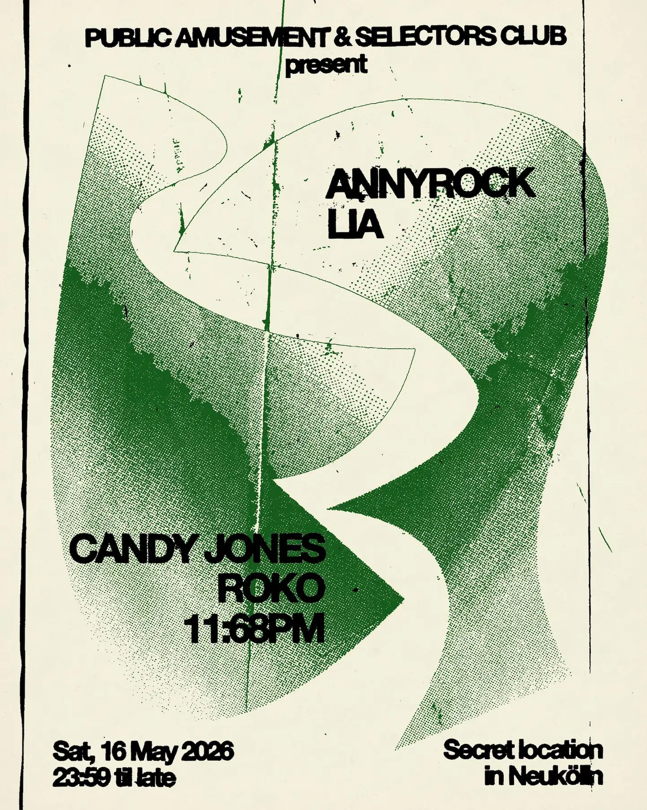
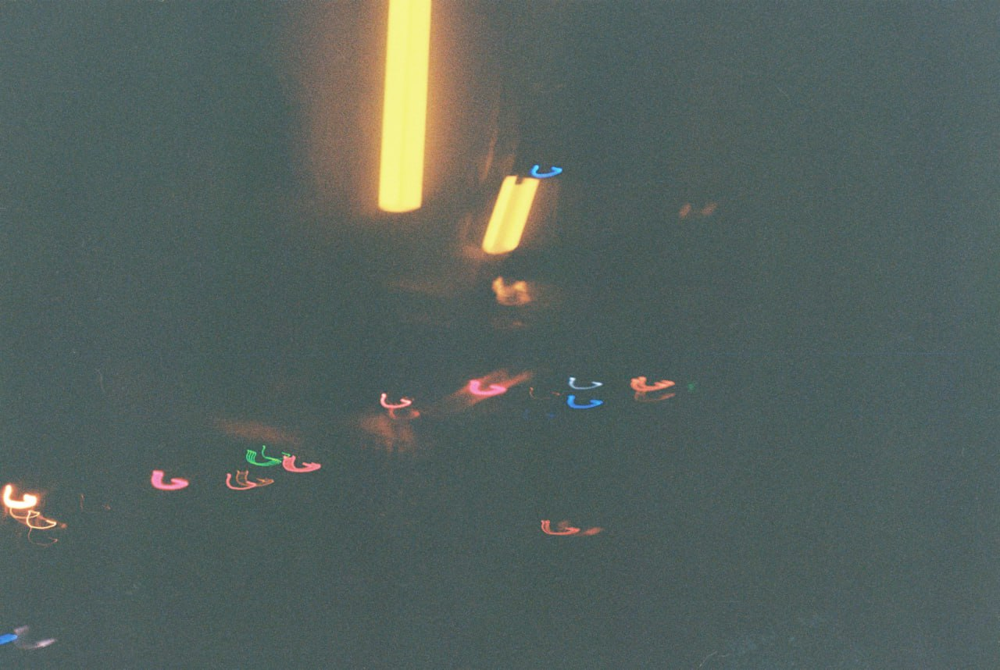
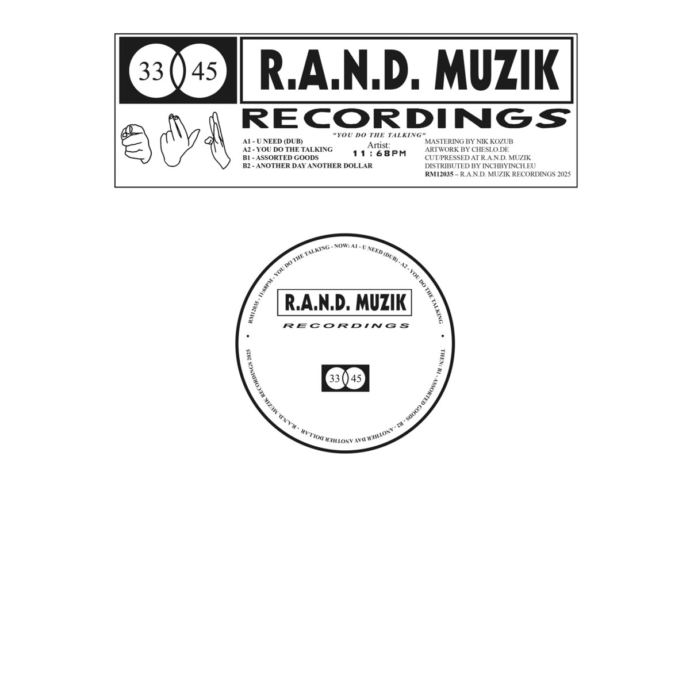

Public Amusement x Selectors Club Vol 2 with LIA & Annyrock // 16.05.2026 at a secret location in Berlin -> Second round with our good friends from Leipzig. Location info in our telegram channel.

Live recording of Candy Jones setting the scene at one of our gatherings in Berlin. Listen here

The whole crew playing in Cologne at Zum Scheuen Reh on April 17th. Thanks Schleuse for the invite. Come through, more info here

11:68PM has been cooking and founded a new label: Craft Services. A true DIY effort from Berlin. Bespoke material dedicated to the dance floor. The first release is a 6-track EP pressed on DJ-friendly 12'' vinyl alongside a 7th digital bonus track. Produced and refined over the course of two months in late summer 2025, it is a testament to fading memories, life lessons and dancefloor epiphanies. Digital & wax available here


New mix by Candy Jones up in the cloud. Listen here
Public Amusement with Noti 20.12.2025 at Paloma Berlin

Listen back to these two great mixes by Lisa & Saber for the decompression Radio80000 takeover in October
Public Amusement with O-Wells 23.08.2025 at Paloma Berlin

11:68PM on a two-hour ride of house music explorations. Listen here
11:68PM on R.A.N.D. Muzik – an EP of dub-infused tech house. Digital & wax available here, check it!!

What If It Works Nr. 25 w/ Candy Jones b2b 11:68PM (10/06/25). Listen here
Public Amusement with Cologne's finest evolpeeD 17.04.2025 at Paloma Berlin

Candy Jones guest mix for Selectors Club. Listen here
Live recording from 11:68PM opening at Paloma. Listen here
Public Amusement 04.01.2025 at Paloma Berlin

Public Amusement with Data Plan 28.12.2024 at Zur Klappe Berlin

What If It Works Nr. 22 w/ Lisa & 11:68PM (26/11/24). Listen here
Public Amusement with Tils 17.10.2024 at Paloma Berlin

Having fun, playing records